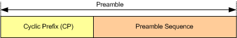

In the time domain, a preamble consists of a cyclic prefix (CP) and the preamble sequence.

The lengths of CP and preamble sequence depend on the preamble format as shown in the following table. Ts is the basic LTE time unit (1 Ts = 1/30.72 MHz ≈ 32.55 ns).
Preamble format | CP length / Ts | Sequence length / Ts | Preamble length / Ts |
|---|---|---|---|
0 | 3168 | 24576 | 27744 |
1 | 21024 | 24576 | 45600 |
2 | 6240 | 2*24576 | 55392 |
3 | 21024 | 2*24576 | 70176 |
4 | 448 | 4096 | 4544 |
Thus a preamble with format 0 to 3 requires 2 to 6 UL timeslots for transmission. A preamble with format 4 is only relevant for TDD and is transmitted in uplink pilot timeslots (UpPTS).
The time resources allowed for transmission of preambles are restricted by 3GPP. There are 64 configurations for FDD and 58 configurations for TDD, identified via the PRACH configuration index. The index defines which radio frames, subframes etc. can be used and which preamble format is used. For details, refer to 3GPP TS 36.211 section 5.7.1.